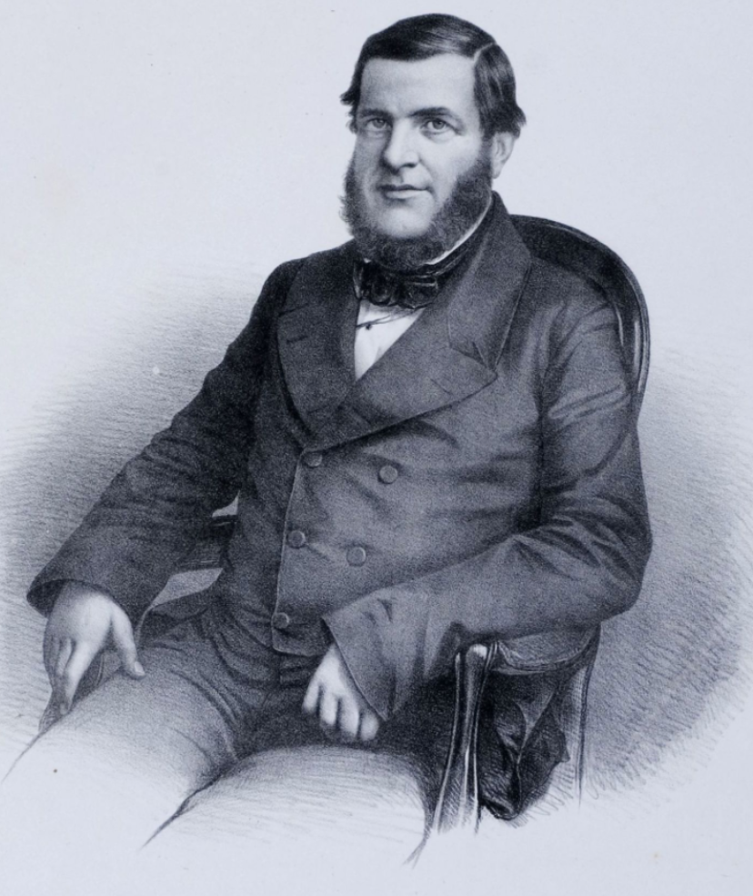

1850
A Lei Eusébio de Queirós, que foi a primeira lei que estabelecia o fim do tráfico de escravizados africanos para o Brasil, foi aprovada em 4 de setembro de 1850 durante o segundo reinado, pelo imperador Dom Pedro II. O Partido Conservador, a partir de aproximadamente 1831, passou a defender no Poder Legislativo, o fim do tráfico negreiro. À frente dessa defesa esteve Eusébio de Queirós, Ministro da Justiça, que já havia exercido o cargo de chefe de polícia da Corte. Ele insistiu na razão do país tomar por si só a decisão de colocar fim ao tráfico, preservando a imagem de nação soberana. Entretanto, pode-se dizer que o principal motivo para que essa lei entrasse em vigor teria sido por conta da grande pressão que inglaterra teria feito para tal acontecimento, utilizando de movimentos como o Bill Aberdeen ( lei que autorizava os ingleses prenderem ou afundarem navios negreiros ).
